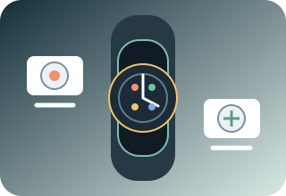

Watch Face Cutter
把华为 GT 6 表盘素材切成组件Cut Huawei GT 6 watch face assets into parts
Streamlit 图像处理工具，检测圆形表盘模块、去背景并增强清晰度，输出适合后续制作的切图。A Streamlit image tool that detects circular watch face modules, removes backgrounds and improves clarity for downstream use.
展开功能与界面预览Explore features & UI preview
提供常用模块位置预设和自定义画布，利用自适应霍夫圆检测定位组件；支持去黑底、边缘去色、CLAHE 与反锐化清晰化、评分筛选和 ZIP 批量导出。Use preset or custom module layouts and adaptive Hough-circle detection. Remove dark backgrounds, reduce edge color spill, enhance with CLAHE and unsharp masking, score candidates and export a ZIP batch.